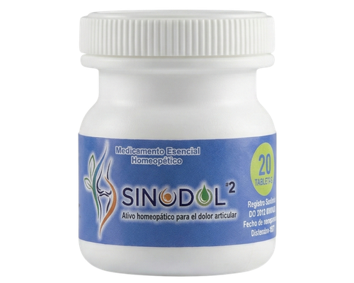

Medicamento Homeopático
Synodol: apoyo homeopático para el manejo de molestias articulares leves a moderadas.
Synodol es un medicamento homeopático formulado como complemento en el manejo de molestias articulares. Su uso debe realizarse según las indicaciones del asesor. Si los síntomas persisten, consulte a su médico.
Envío a toda Colombia · Pago contra entrega disponible

